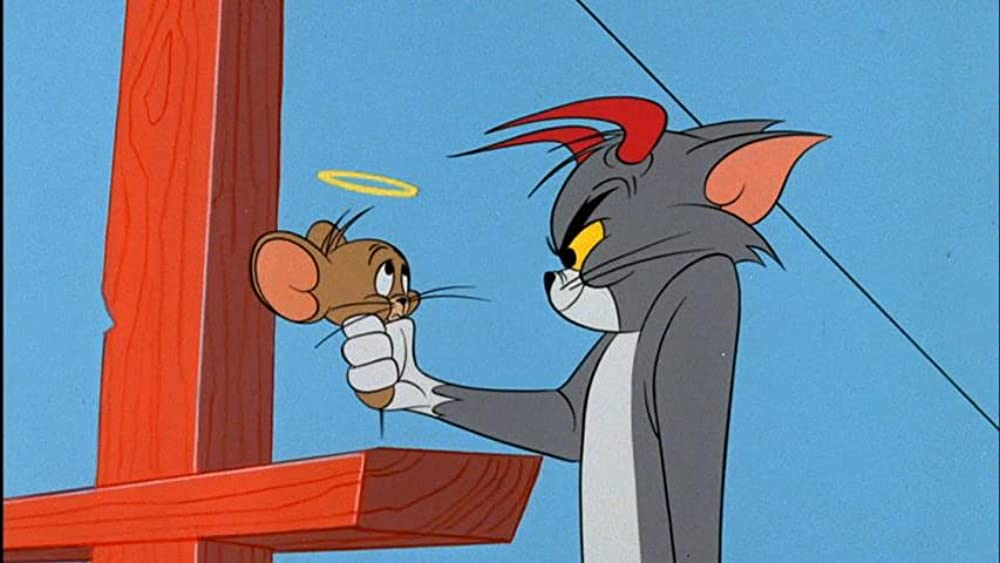
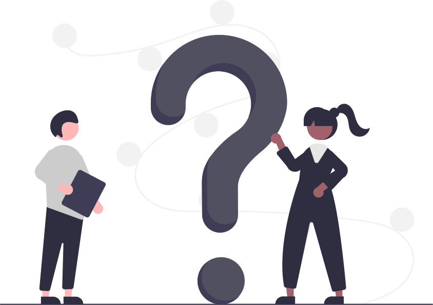

Nine Alignments Test
Nine Alignments come from the popular game of Dungeons and Dragons. This is generally used to help personalize a character to play as in the game. Nine distinct alignments define all the possible combinations of the lawful-chaotic axis with the good-evil axis. Each alignment description below depicts a typical character of that alignment. Remember that individuals vary from this norm, and that a given character may act more or less in accord with his or her alignment from day to day.
Good-Evil axis as the name suggests is the representative of innate good
or evil in a person. The three stages in the Good-Evil axis are
Good-Neutral-Evil. It's common for every human being to have feelings or
episodes pertaining to evil or partially leaning towards the evil side
of the spectrum every now and then. This is more exaggerated in
fictional characters.
Good characters makes sacrifices to protect innocent
lives and they have concern and respect for sentient beings. Qualities
like Altruism, Kindness, Selflessness are attributed to "Good"
characters.
Evil characters are deceptive, cunning and
self-serving. They would lie, cheat and take lives without any qualms.
They do the things that they do for selfish purposes or for no reason at
all, simply because they can.
Neutral characters can be on the fence about decisions
related to good or evil. They may have the desire or need to take lives
but lack the resolve to do so. Their decision maybe purely personally
driven and are usually varying on a case by case basis.

Lawful-Chaotic axis represents the sense of justice or element of mayhem
and disorder inside a person. The three stages in the Lawful-Chaotic
axis are Lawful-Neutral-Chaotic. This concept is more relatable to
everyone than the good-evil axis. Requiring well set laws or operating
on pure chaos is a commonly observed diversity in humans. Orientation
towards being Lawful or Chaotic is often habitude rather than choice.
Lawful characters are trustworthy, they keep their
word, respect authority and traditions and judge incompetence and
irresponsibility harshly.Lawful could also entail being narrow minded
and restricted to traditions or laws. It could mean a lack of change and
adaptability and also a little to no freedom.
Chaotic characters are all about freedom and
flexibility. This freedom often comes along with recklessness,
irresponsibility and sometimes dishonour. They also tend to resent
authority. Their ideals promote the concept of freedom allowing people
to think and act freely on an individual level rather than abiding by
law.
Neutral characters are not black and white when it
comes to obeying the law. They respect the law but don't feel the strong
need to obey or disobey. They can act according to their needs. Some
neutral characters may see this lack of affinity towards one side as
superiority because either side has their own drawbacks.
This quiz is a fun little thought process of inserting onself into the world of fiction and testing what character troupe or perosnality type among the nine alignments would one fit in. Every question has 5 options to choose from based on how agreeable or diagreeable the statement in the question is. Try not to answer many questions with neutral so as to achieve accurate results. 